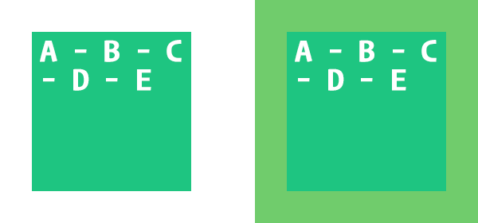

La propriété
Afin d'illustrer l'impact de cette propriété, une boite de 200x200px contenant 5 lettres sera utilisée avec les différentes valeurs de box-sizing.
Est la valeur par défaut attribué à la propriété
Par exemple, la boite ayant le contenu (A - B - C - D - E) ne change pas la disposition de son contenu même si un padding de 40px lui est ajouté. En contrepartie, la boite mesure maintenant réellement 280px (40px + 200px + 40px).
 À gauche, sans padding.À droite, avec un padding de 40px.
Ce mode sert à donner priorité à la dimension réelle de la boite. Évitant ainsi qu'elle change de dimension lorsqu'une marge intérieure (padding) ou une bordure (border) lui est ajoutée.
Par exemple, la boite ayant le contenu (A - B - C - D - E) ne change jamais de dimension (200x200px). En contrepartie, Le contenu (A - B - C - D - E) doit ajuster sa disposition lorsqu'un padding de 40px est ajouté à la boite, puisque l'espace alloué au contenu se trouve réduit afin de ne pas modifier la dimension réelle de la boite.
 À gauche, sans padding.
À gauche, sans padding.À droite, avec un padding de 40px.
Par exemple, une boite prenant toute la largeur de la fenêtre et ayant une marge intérieure de 20px:
En
Tandis qu'en
De nos jours, la majorité des développeurs convertissent toutes les boites de leurs pages en
Ceci permet de simplifier la réalisation de mises en page.